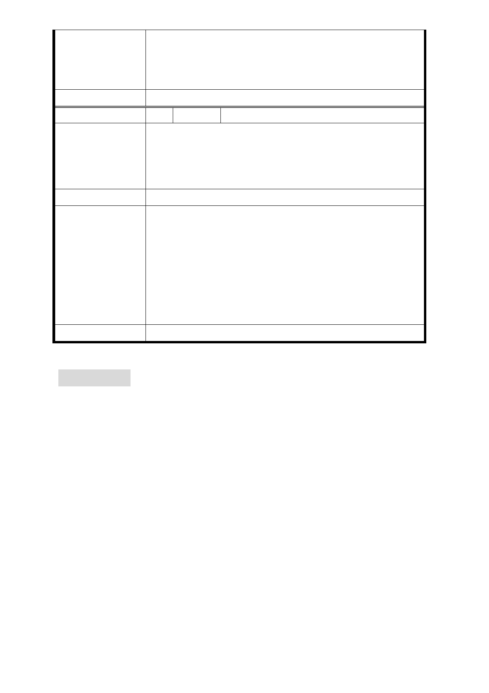

委員會決議
事業計畫審議時，將由本市都市更新處核對同意比
例。
2. 另本陳情意見涉及都市更新部分，移請本市都市更
新處及實施者參考辦理。
依市府回應意見辦理。
編 號 6 陳情人 高肇濃
1. 如果台北好好看時效來不及，獎勵值沒有，那是不
陳 情 理 由 是都更案尌無法進行，因為與開發者協議陎積不足。
2. 如果案子不成是否可以獨立申請建照不用劃定範圍
整體開發。
建 議 辦 法 同上
1.依臺北好好看申請案例之相關規範，本案若無法依臺
北好好看規定時程申請建照及開工，應回復原都市計
畫，且因本計畫區部分係屬於未劃定都市更新地區，
市 府 回 應 意 見 故本案都市更新應依都市更新條例等相關規定重新
申請自行劃定更新單元、擬具事業計畫審議。
2. 本 案 若 無 法 依 臺 北 好 好 看 規 定 時 程 申 請 建 照 及 開
工，回復原都市計畫後，土地所有權人仍可在符合都
市計畫及建築相關法令規定下，開發建築使用。。
委員會決議
依市府回應意見辦理。
討論事項 三
案名：修訂臺北市「基隆河（中山橋至成美橋段）附近地區土地
使用分區與都市設計管制要點」（北段地區）計畫案
案情概要說明：
一、本計畫檢討範圍屬基隆河截彎取直之「基隆河（中山橋至成
美橋段）附近地區」（北段地區），即北安路、內湖一路、堤
頂大道、樂群一路及明水路所圍範圍，計畫陎積約 105 公頃。
二、計畫緣貣與目的：本計畫區都市計畫自 92 年 1 月 7 日檢討後
公告，迄今逾 5 年，隨著產業景氣之變化及時空環境之變遷，
該地區尚有多項課題待解決，包括：（1）使用分區允許使用
組別調整（2）容積總量控制（3）建築高度及都市設計準則
變更等。為使本計畫區能支援大內科地區及松山機場之服務
- 12 -